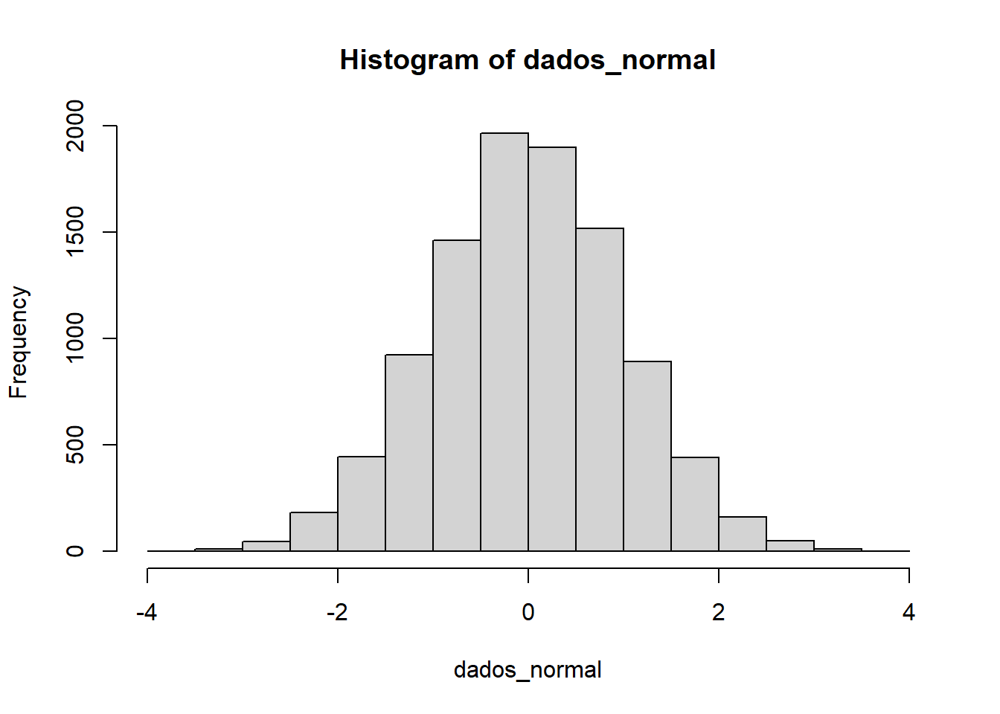

Capítulo 4 Medidas Descritivas
Importante: A partir deste capítulo utilizaremos a função
kabledo pacoteknitrpara visualização de conjuntos de dados. Na prática isto não é necessário, apenas o realizamos para efeitos de visualização.
4.1 Tipos de Variáveis
Antes de analisarmos conjuntos de dados, é necessário termos um conhecimento sobre tipos de variáveis. Para isto, consideremos a seguinte tabela:
nome = c('Djoko','Wilson','Jiraiya', 'Leon', 'Nilce')
est_civil = c('Solteiro','Casado','Solteiro', 'Casado', 'Casado')
escolaridade = c('Pós-graduação',
'Ensino médio completo',
'Ensino médio completo',
'Pós-graduação',
'Superior completo')
n_filhos = c(0, 0, 1, 0, 0)
salario = c(4500, 3000, 1500, 5000, 5500)
idade = c(29, 33, 33, 39, 32)
df = data.frame(nome, est_civil, escolaridade, n_filhos, salario, idade)
kable(df, align = 'c',
caption = 'Dados sobre Youtubers.') # Melhor visualização dos dados para este PDF| nome | est_civil | escolaridade | n_filhos | salario | idade |
|---|---|---|---|---|---|
| Djoko | Solteiro | Pós-graduação | 0 | 4500 | 29 |
| Wilson | Casado | Ensino médio completo | 0 | 3000 | 33 |
| Jiraiya | Solteiro | Ensino médio completo | 1 | 1500 | 33 |
| Leon | Casado | Pós-graduação | 0 | 5000 | 39 |
| Nilce | Casado | Superior completo | 0 | 5500 | 32 |
Variáveis como sexo, escolaridade e estado civil apresentam realizações de uma qualidade ou atributo do indivíduo pesquisado, enquanto outras como número de filhos, salário e idade apresentam números como resultados de uma contagem ou mensuração. Chamamos as do primeiro tipo de qualitativas e as do segundo de quantitativas
Cada uma das duas ainda pode ser dividida em dois tipos:
Variável qualitativa nominal: atributos não apresentam uma ordem lógica;
Variável qualitativa ordinal: atributos apresentam uma ordem lógica bem estabelecida;
Variável quantitativa discreta: dados de contagem, assumem apenas valores inteiros;
Variável quantitativa contínua: dados que podem assumir qualquer tipo de valor.

Muitas vezes queremos resumir estes dados, apresentando um ou mais valores que sejam representativos da série toda. Neste contexto entram às medidas de posição e dispersão.
4.2 Medidas de Posição
Usualmente utilizamos uma das seguintes medidas de posição (ou localização): média, mediana ou moda. Vamos as suas definições:
Moda: valor mais frequente do conjunto de valores observados.
Mediana: valor que ocupa a posição central das observações quando estas estão ordenadas em ordem crescente.
- Quando o número de observações for par, usa-se como mediana a média aritmética das duas observações centrais.
Na tabela 4.1 temos a seguinte mediana para uma coluna específica:
median(df$salario)## [1] 4500Para todas as colunas:
# Aplicaremos a função median para todas as colunas:
apply(df, MARGIN = 2, FUN = median)## nome est_civil escolaridade n_filhos salario
## "Leon" "Casado" "Pós-graduação" "0" "4500"
## idade
## "33"Média: soma de todos os elementos do conjunto dividida pela quantidade de elementos do conjunto
\[ \overline{x} = \frac{x_1+x_2 + \dots + x_n}{n} \]
Na tabela 4.1 temos a seguinte mediana para uma coluna específica:
mean(df$salario)## [1] 3900Para todas as colunas:
colMeans(df[, c('idade', 'salario')])## idade salario
## 33.2 3900.04.3 Medidas de Dispersão
O resumo de um conjunto de dados por uma única medida representativa de posição esconde toda a informação sobre a variabilidade de um conjunto de observações. Consideremos que cinco alunos realizaram cinco provas, obtendo as seguintes notas:
nomes = c('alunoA', 'alunoB', 'alunoC',
'alunoD', 'alunoE')
notas = matrix(c(3,4,5,6,7,
1,3,5,7,9,
2,5,5,5,8,
3,5,5,5,7,
0,0,5,10,10), nrow = 5, ncol = 5, byrow = T)
df = data.frame(notas, row.names = nomes)
colnames(df) = c('P1', 'P2', 'P3', 'P4', 'P5')
kable(df, align = 'c')| P1 | P2 | P3 | P4 | P5 | |
|---|---|---|---|---|---|
| alunoA | 3 | 4 | 5 | 6 | 7 |
| alunoB | 1 | 3 | 5 | 7 | 9 |
| alunoC | 2 | 5 | 5 | 5 | 8 |
| alunoD | 3 | 5 | 5 | 5 | 7 |
| alunoE | 0 | 0 | 5 | 10 | 10 |
Temos as seguintes médias para os alunos:
rowMeans(df)## alunoA alunoB alunoC alunoD alunoE
## 5 5 5 5 5Cada aluno possui a mesma média de notas, porém, isto não informa nada sobre a diferença na variabilidade das notas. A partir disto, são criadas medidas que sumarizam a variabilidade de um conjunto de observações.
Em um primeiro momento podemos podemos considerar a soma da diferença dos dados em relação a média:
\[ x_1 - \overline{x} + x_2 - \overline{x} + \cdots + x_n - \overline{x} \]
Porém, em qualquer conjunto a soma destes desvios é igual a zero. Uma alterntiva é então adicionar o valor absoluto em cada diferença:
\[ |x_1 - \overline{x}| + |x_2 - \overline{x}| + \cdots + |x_n - \overline{x}| \]
Apesar de possuir uma boa interpretabilidade, tal métrica não possui propriedades matemáticas interessantes. Assim, trabalharemos com a diferença de quadrados de um conjunto de dados:
\[ (x_1 - \overline{x})^2 + (x_2 - \overline{x})^2 + \cdots + (x_n - \overline{x})^2 \]
Como muitas vezes queremos comparar conjuntos de dados de diferentes tamanhos, realizamos a divisão destes valores pelo total de elementos em uma amostra:
\[ \text{var}(X) = \frac{(x_1 - \overline{x})^2 + (x_2 - \overline{x})^2 + \cdots + (x_n - \overline{x})^2}{n} \]
A partir disto, definimos desvio padrão como sendo a raiz da variância:
\[ \text{dp} = \sqrt{\text{var}(X)} \]
Realizamos isto pois caso os dados estejam em uma certa unidade de medida, como \(cm\) , ao calcularmos a variância passamos a trabalhar com \(cm^2\), o que dificulta a interpretabilidade dos resultados.
4.4 Quantis Empíricos
Tanto a média como o desvio padrão podem não ser medidas adequadas para representar um conjunto de dados, uma vez que:
São afetados por valores extremos;
Apenas os dois valores não dão informação sobre a simetria ou assimetria da distribuição dos dados
Vimos que a mediana é define uma divisão dos dados em duas metades. Além disto existem medidas chamadas de quantil de ordem p ou p-quantil indicado por \(q(p)\) onde \(p\) é uma proporção qualquer, \(0<p<1\) tal que \(100\%\) das observações sejam menores do que \(q(p)\).
Abaixo temos alguns dos quantis mais utilizados:
\(q(0.25) = q_1:\) 1° Quartil ou 25° Percentil
\(q(0.50) = q_2:\) 2° Quartil, Mediana ou 50° Percentil
\(q(0.75) = q_3:\) 3° Quartil ou 75° Percentil
\(q(0.40) 1:\) 4° Decil
\(q(0.95):\) 95° Percentil
4.5 Box Plot
A informação contida nos quantis pode ser confusa quando estamos observando vários conjuntos de dados. A partir disto traduzimos-a em um diagrama, qual é chamado de box plot:
Para construção dessa gráfico definimos por intervalo interquartil o valor:
\[ \text{IQR}(X) = q_3 - q_1 \]
Desenhamos um retângulo que parte do primeiro quartil até o terceiro, com a mediana sendo representada por uma linha em seu interior. A partir do retângulo desenhamos uma linha até o maior ponto que não exceta o valor \(q_3+1.5 \cdot \text{IQR}(X)\), chamado de limite superior. De modo análogo fazemos o mesmo procedimento até a parte inferior do retângulo considerando o valor \(q_1 + 1.5 \cdot \text{IQR}(X)\) chamado de limite interior. As observações que estiverem acima do limite superior ou abaixo do limite superior são chamados de pontos exteriores e representadas por asteriscos. Essas observações podem ser chamaas de outliers ou valores atípicos.
O box plot dá uma ideia de posição, dispersão, assimetria dos dados.
4.6 Transformações
Vários procedimentos estatísticos são baseados na posição que os dados possuem uma distribuição em forma de sino (oriundos de uma distribuição normal), ou que a distribuição seja mais ou menos simétrica.
Se quisermos utilizar tais procedimentos podemos efetuar transformações nas observações, de modo a se obter uma distribuição mais simétrica e próxima da normal. As transformações mais frequentemente utilizadas são:
\[ x = \left\{\begin{matrix}&\sqrt{x}\\ &\ln(x) \\&\frac{1}{x}\end{matrix}\right. \]
para cada transformação obtemos gráficos apropriados para os dados originais e transformados, de modo a escolhermos o valor mais adequado de \(p\).
4.7 Lab 01 - Conjunto de dados Iris
O conjunto de dados Iris é um dos mais utilizados quando introduzimos conceitos de ciência de dados. Este pode ser encontrado em UCI Machine Learning Repository. Tal conjunto consiste de 150 amostras de 4 tipos de espécies de flores distintas contendo os atributos:
SepalLengthCm
SepalWidthCm
PetalLengthCm
PetalWidthCm
Podemos acessá-lo no R sem nenhum carregamento prévio da seguinte forma:
# A função head() mostra os cinco primeiros itens de data.frame:
head(iris)## Sepal.Length Sepal.Width Petal.Length Petal.Width Species
## 1 5.1 3.5 1.4 0.2 setosa
## 2 4.9 3.0 1.4 0.2 setosa
## 3 4.7 3.2 1.3 0.2 setosa
## 4 4.6 3.1 1.5 0.2 setosa
## 5 5.0 3.6 1.4 0.2 setosa
## 6 5.4 3.9 1.7 0.4 setosaHá certas boas práticas ao carregar um conjunto de dados, dentre elas temos:
Visualização de sua dimensão:
# O primeiro valor é a quantidade de linhas do conjunto de dados # e o segundo a sua quantidade de atributos dim(iris)## [1] 150 5Visualização do tipo de cada atributo:
str(iris) # Structure of an Arbitrary R Object## 'data.frame': 150 obs. of 5 variables: ## $ Sepal.Length: num 5.1 4.9 4.7 4.6 5 5.4 4.6 5 4.4 4.9 ... ## $ Sepal.Width : num 3.5 3 3.2 3.1 3.6 3.9 3.4 3.4 2.9 3.1 ... ## $ Petal.Length: num 1.4 1.4 1.3 1.5 1.4 1.7 1.4 1.5 1.4 1.5 ... ## $ Petal.Width : num 0.2 0.2 0.2 0.2 0.2 0.4 0.3 0.2 0.2 0.1 ... ## $ Species : Factor w/ 3 levels "setosa","versicolor",..: 1 1 1 1 1 1 1 1 1 1 ...Sumário de seus atributos:
summary(iris)## Sepal.Length Sepal.Width Petal.Length Petal.Width ## Min. :4.300 Min. :2.000 Min. :1.000 Min. :0.100 ## 1st Qu.:5.100 1st Qu.:2.800 1st Qu.:1.600 1st Qu.:0.300 ## Median :5.800 Median :3.000 Median :4.350 Median :1.300 ## Mean :5.843 Mean :3.057 Mean :3.758 Mean :1.199 ## 3rd Qu.:6.400 3rd Qu.:3.300 3rd Qu.:5.100 3rd Qu.:1.800 ## Max. :7.900 Max. :4.400 Max. :6.900 Max. :2.500 ## Species ## setosa :50 ## versicolor:50 ## virginica :50 ## ## ##
Dessa maneira poderemos contatar valores errôneos no conjunto de dados, distribuições de variáveis categóricas e ter um melhor contato com o conjunto de dados.
Há ainda diversas maneiras de realizarmos visualizações desse conjunto no R, observemos o boxplot da variável Sepa.Length:
boxplot(iris$Sepal.Length)
ggplot(data = iris, aes(y = Sepal.Length)) +
geom_boxplot() +
labs(title = 'Boxplot Iris') +
theme(axis.ticks.x = element_blank(),
axis.text.x = element_blank())
Observamos que não há presença de outliers, além disso, como a parte debaixo do retângulo separado pela linha que representa a mediana é menor, isto indica que a distribuição dos dados é ligeiramente assimétrica, o qual é confirmado pelo histograma:
hist(iris$Sepal.Length)
ggplot(data = iris, aes(x = Sepal.Length, fill = ..count..)) +
geom_histogram(binwidth = 0.25, boundary = 0) +
scale_x_continuous(breaks = seq(1, 10, by = 0.25)) 